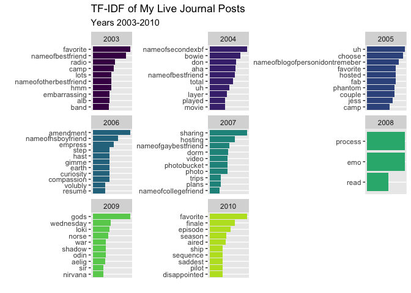
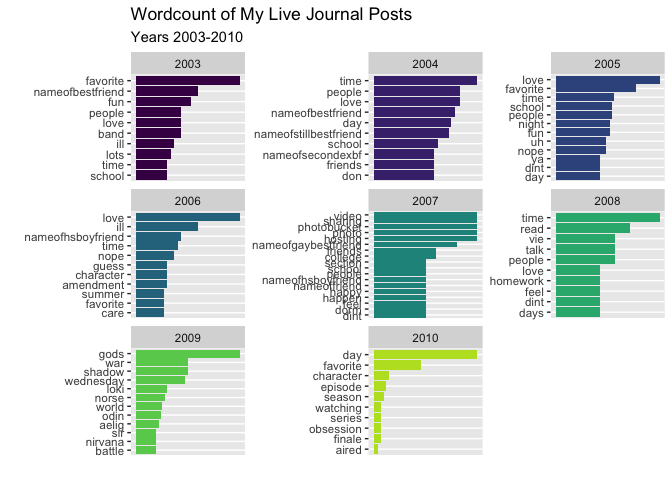
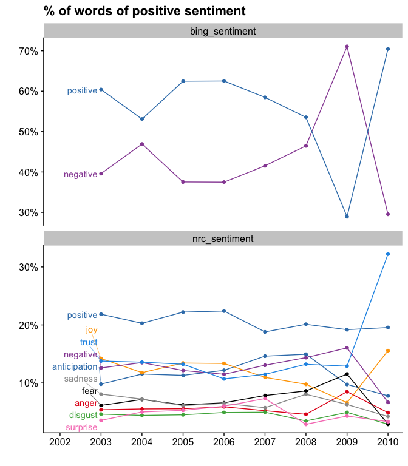
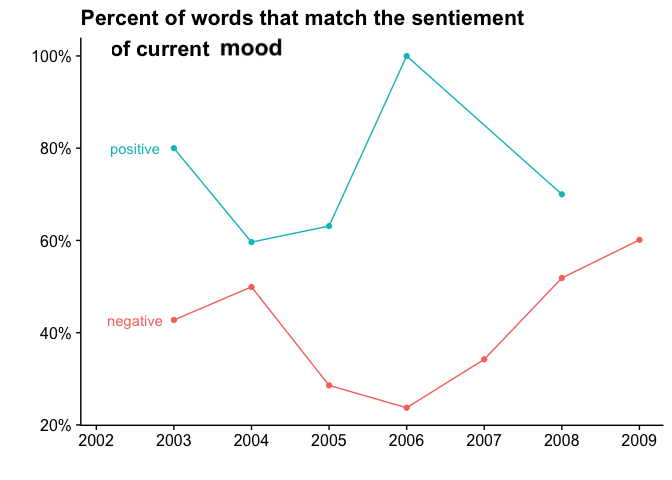

I’m about to BARE MY SOUL to the internet. Well, the soul of my teenage self. Get ready!
Live Journal, you may remember, was(/is - it does still exist) was a blogging site before we really knew what blogging was. It was both a place to put diary entries and those quizzes that got passed around in the day. It was also used for FanFic and community gathering. I did NOT use my (main) account for fan gathering. (Though I did write some excellent/terrible fanfics. Didn’t everyone have a Lord of Rings self-insert character?)
I don’t really remember when I started this idea, but I thought it would be fun to see just how emo I was in 2006. Let’s go!
Step 0: Load the libraries
library(tidyverse)
library(lubridate)
library(tidytext)
library(hunspell)
library(ggrepel)
library(cowplot)Step 1: Clean the data
I downloaded all my past Live Journal entities to a folder on my desktop in the same CSV format, so that I could easily load them in for analysis. I am pleasantly surprised that Live Journal made it so easy to download my history like this! I did have to click the same button a ton of time - but I did get all my data.
The next step was to take every journal and separate out the individual words using ‘tidytext.’
lj_words <- lj_df %>%
select(itemid, eventtime, logtime, subject, current_music, current_mood, event) %>%
mutate(across(c(eventtime, logtime), ymd_hms),
year = year(logtime),
month = month(logtime),
) %>%
mutate(event = str_remove_all(event, "'")) %>%
unnest_tokens(word, event, token = "words", format = "html", strip_url = FALSE) Not included in this blog post, for privacy of my teenage friends, I also cleaned and changed names of my friends and locations to clean the data and protect their privacy. For example, instead of the name “Linda” you may see “nameofsister”.
I was (and continue to be) terrible at spelling words correctly and also terrible at checking what I’ve typed after the fact. I use ‘Hunspell’ here in an attempt to fix some of the most common issues. Does this spell check get everything? No! But alas, I am a terrible speller and we move on in life.
lj_words_spell_check <- lj_words_protect %>%
anti_join(my_stop_words, by = "word") %>%
count(word) %>%
rowwise() %>%
mutate(spell_check = hunspell(word)) %>%
filter(length(spell_check) >= 1) %>%
mutate(suggest = hunspell_suggest(spell_check)) lj_correct <- lj_words_spell_check %>%
filter(length(suggest) > 0) %>%
mutate(suggest_pick = pluck(suggest, 1)) %>% # just pick the first one because I am lazy
ungroup() %>%
unnest(suggest_pick) %>%
select(word, suggest_pick) lj_words_corrected <- lj_words_protect %>%
left_join(lj_correct, by = "word") %>%
mutate(word = coalesce(suggest_pick, word)) %>%
unnest_tokens(output = "word", input = word) # used because sometimes the correction is actually 2+ words now Step 2: Now we move on to analysis!
The data is clean, or at least as clean as it is going to get today.
Word counts
I start with TF-IDF. The goal here is to see what I was talking about each year and how it may differ as I got older. As a reminder, I have changed the names of all my friends and family for privacy. That way you don’t know who “nameofbestfriend” is and why I stopped mentioning “nameofbestfriend” in 2006. (We had a bit of a falling out at the end of HS.)
tfidf <- lj_words_corrected %>%
count(year, word) %>%
tidytext::bind_tf_idf(word, year, n) %>%
anti_join(stop_words, by = "word") %>%
group_by(year) %>%
top_n(n = 10, wt = tf_idf) %>%
ungroup() %>%
filter(n >= 2) 
Look at 2009 - clearly my only entries were my Norse myth college class. I remember I put a few of my class papers on my Live Journal.
We can look at the differences between TF-IDF and a regular word count, while accounting for stop words.
wordcount <- lj_words_corrected %>%
count(year, word) %>%
anti_join(stop_words, by = "word") %>%
group_by(year) %>%
top_n(n = 10, wt = n) %>%
ungroup() %>%
filter(n >= 3) 
Sentiment
Next I look at sentiment. I remember using live journal to be super angsty. I assumed that I would largely see negative sentiment and words across the years.
df_plot <- lj_words_corrected %>%
left_join (get_sentiments("bing"), by = "word" ) %>%
rename(bing_sentiment = sentiment) %>%
left_join (get_sentiments("nrc"), by = "word" ) %>%
rename(nrc_sentiment = sentiment) %>%
pivot_longer(cols = c(bing_sentiment, nrc_sentiment),
names_to = "sentiment_type", values_to = "sentiment") %>%
count(sentiment_type, year, sentiment) %>%
filter(! is.na(sentiment) ) %>%
rename(count = n ) %>%
group_by(sentiment_type, year) %>%
mutate(total = sum(count)) %>%
ungroup() %>%
mutate(percent = count / total,
year_month = ymd(str_c(year, "01", "01", sep = "-"))
) Instead, it seems my words were largely more positive then negative. (Outside of 2009 - which is either largely from my anxiety attacks that year or Norse mythology is just super depressing.) Not as ansgty as I remember!

Ah, but did I mark my “current mood” / how are you feeling” part as positive as my words are? You be the judge.

End :)
So there you have it. Was teenage Erin as emo as I thought? Maybe not! Or maybe I wrote all the most emo journals in my physical diary. The world will never know (because those diaries have been lost).